SLIDE 01
Theme 4: Cognitive Development
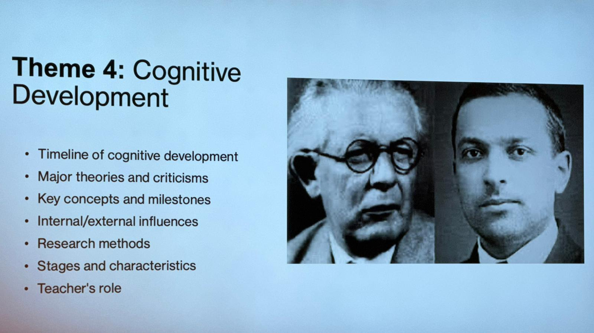
- Timeline of cognitive development
- Major theories and criticisms
- Key concepts and milestones
- Internal/external influences
- Research methods
- Stages and characteristics
- Teacher's role
SLIDE 02
What is Cognitive Development?
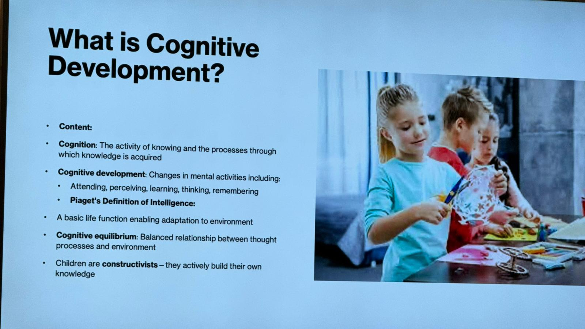
- Content:
- Cognition: The activity of knowing and the processes through which knowledge is acquired
- Cognitive development: Changes in mental activities including:
- Attending, perceiving, learning, thinking, remembering
- Piaget's Definition of Intelligence:
- A basic life function enabling adaptation to environment
- Cognitive equilibrium: Balanced relationship between thought processes and environment
- Children are constructivists – they actively build their own knowledge
SLIDE 03
Piaget's Key Concepts – How Knowledge Develops
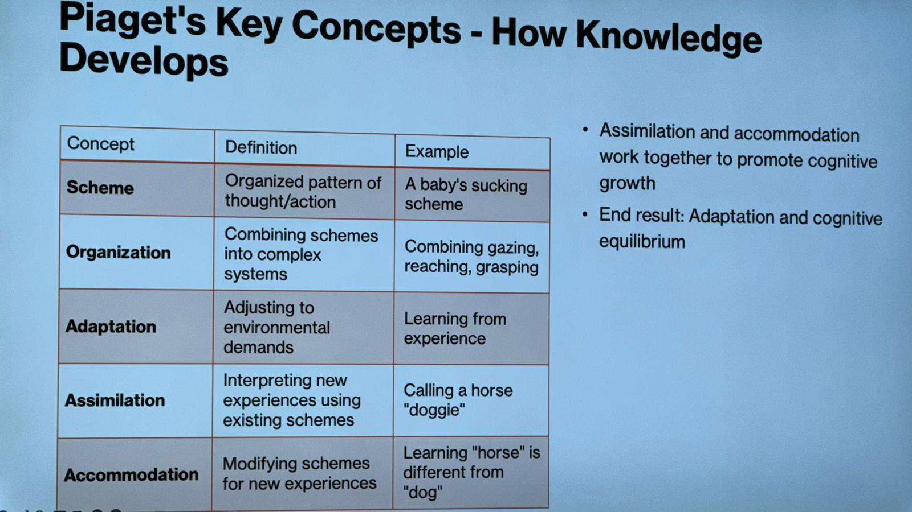
| Concept | Definition | Example |
|---|---|---|
| Scheme | Organized pattern of thought/action | A baby's sucking scheme |
| Organization | Combining schemes into complex systems | Combining gazing, reaching, grasping |
| Adaptation | Adjusting to environmental demands | Learning from experience |
| Assimilation | Interpreting new experiences using existing schemes | Calling a horse "doggie" |
| Accommodation | Modifying schemes for new experiences | Learning "horse" is different from "dog" |
- Assimilation and accommodation work together to promote cognitive growth
- End result: Adaptation and cognitive equilibrium
SLIDE 04
Piaget's Stages – Overview Timeline
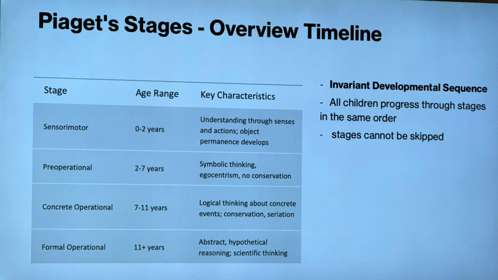
| Stage | Age Range | Key Characteristics |
|---|---|---|
| Sensorimotor | 0–2 years | Understanding through senses and actions; object permanence develops |
| Preoperational | 2–7 years | Symbolic thinking, egocentrism, no conservation |
| Concrete Operational | 7–11 years | Logical thinking about concrete events; conservation, seriation |
| Formal Operational | 11+ years | Abstract, hypothetical reasoning; scientific thinking |
- Invariant Developmental Sequence
- All children progress through stages in the same order
- Stages cannot be skipped
SLIDE 05
Sensorimotor Stage (0–2 Years)
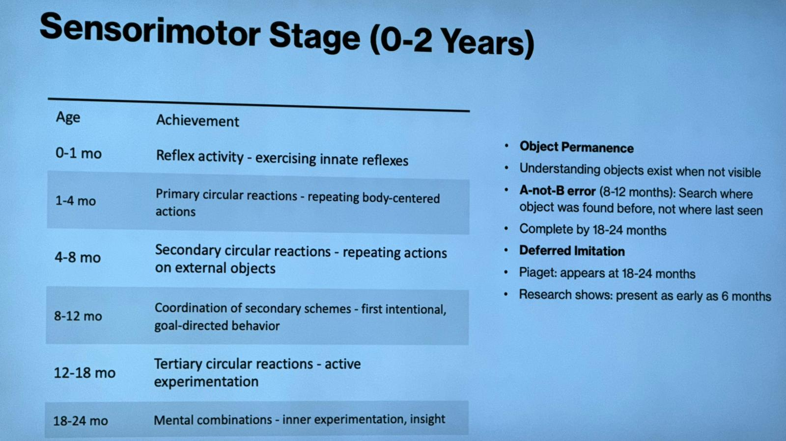
| Age | Achievement |
|---|---|
| 0–1 mo | Reflex activity – exercising innate reflexes |
| 1–4 mo | Primary circular reactions – repeating body-centered actions |
| 4–8 mo | Secondary circular reactions – repeating actions on external objects |
| 8–12 mo | Coordination of secondary schemes – first intentional, goal-directed behavior |
| 12–18 mo | Tertiary circular reactions – active experimentation |
| 18–24 mo | Mental combinations – inner experimentation, insight |
- Object Permanence
- Understanding objects exist when not visible
- A-not-B error (8–12 months): Search where object was found before, not where last seen
- Complete by 18–24 months
- Deferred Imitation
- Piaget: appears at 18–24 months
- Research shows: present as early as 6 months
SLIDE 06
Challenges to Piaget's Sensorimotor Theory
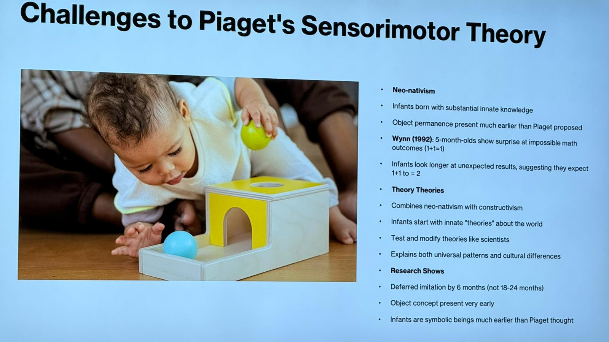
- Neo-nativism
- Infants born with substantial innate knowledge
- Object permanence present much earlier than Piaget proposed
- Wynn (1992): 5-month-olds show surprise at impossible math outcomes (1+1=1)
- Infants look longer at unexpected results, suggesting they expect 1+1 to = 2
- Theory Theories
- Combines neo-nativism with constructivism
- Infants start with innate "theories" about the world
- Test and modify theories like scientists
- Explains both universal patterns and cultural differences
- Research Shows
- Deferred imitation by 6 months (not 18–24 months)
- Object concept present very early
- Infants are symbolic beings much earlier than Piaget thought
SLIDE 07
Preoperational Stage (2–7 Years) – Symbolic Thinking
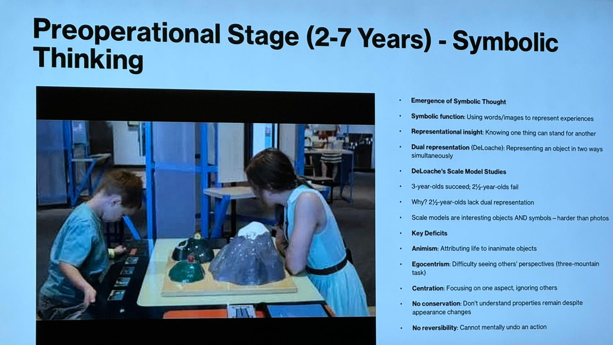
- Emergence of Symbolic Thought
- Symbolic function: Using words/images to represent experiences
- Representational insight: Knowing one thing can stand for another
- Dual representation (DeLoache): Representing an object in two ways simultaneously
- DeLoache's Scale Model Studies
- 3-year-olds succeed; 2½-year-olds fail
- Why? 2½-year-olds lack dual representation
- Scale models are interesting objects AND symbols – harder than photos
- Key Deficits
- Animism: Attributing life to inanimate objects
- Egocentrism: Difficulty seeing others' perspectives (three-mountain task)
- Centration: Focusing on one aspect, ignoring others
- No conservation: Don't understand properties remain despite appearance changes
- No reversibility: Cannot mentally undo an action
SLIDE 08
Reevaluating the Preoperational Child
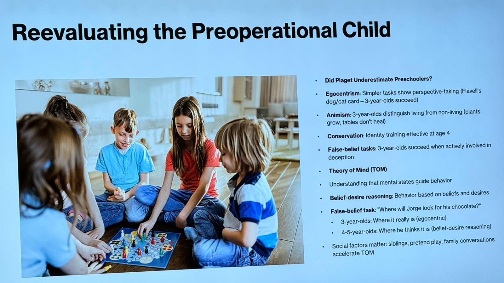
- Did Piaget Underestimate Preschoolers?
- Egocentrism: Simpler tasks show perspective-taking (Flavell's dog/cat card – 3-year-olds succeed)
- Animism: 3-year-olds distinguish living from non-living (plants grow, tables don't heal)
- Conservation: Identity training effective at age 4
- False-belief tasks: 3-year-olds succeed when actively involved in deception
- Theory of Mind (TOM)
- Understanding that mental states guide behavior
- Belief-desire reasoning: Behavior based on beliefs and desires
- False-belief task: "Where will Jorge look for his chocolate?"
- 3-year-olds: Where it really is (egocentric)
- 4–5-year-olds: Where he thinks it is (belief-desire reasoning)
- Social factors matter: siblings, pretend play, family conversations accelerate TOM
SLIDE 09
Concrete Operational Stage (7–11 Years)
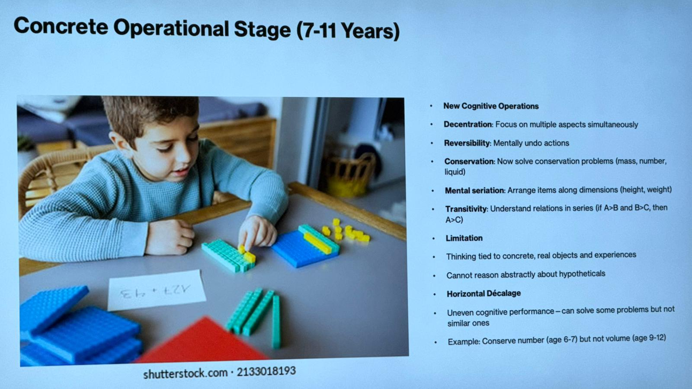
- New Cognitive Operations
- Decentration: Focus on multiple aspects simultaneously
- Reversibility: Mentally undo actions
- Conservation: Now solve conservation problems (mass, number, liquid)
- Mental seriation: Arrange items along dimensions (height, weight)
- Transitivity: Understand relations in series (if A>B and B>C, then A>C)
- Limitation
- Thinking tied to concrete, real objects and experiences
- Cannot reason abstractly about hypotheticals
- Horizontal Décalage
- Uneven cognitive performance – can solve some problems but not similar ones
- Example: Conserve number (age 6–7) but not volume (age 9–12)
SLIDE 10
Formal Operational Stage (11+ Years)
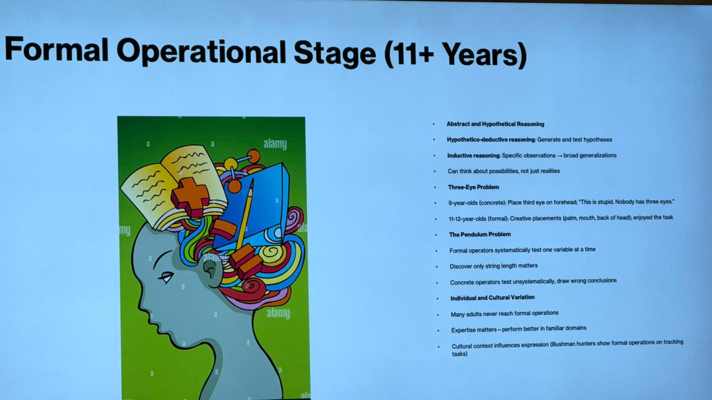
- Abstract and Hypothetical Reasoning
- Hypothetico-deductive reasoning: Generate and test hypotheses
- Inductive reasoning: Specific observations → broad generalizations
- Can think about possibilities, not just realities
- Three-Eye Problem
- 9-year-olds (concrete): Place third eye on forehead; "This is stupid. Nobody has three eyes."
- 11–12-year-olds (formal): Creative placements (palm, mouth, back of head); enjoyed the task
- The Pendulum Problem
- Formal operators systematically test one variable at a time
- Discover only string length matters
- Concrete operators test unsystematically, draw wrong conclusions
- Individual and Cultural Variation
- Many adults never reach formal operations
- Expertise matters – perform better in familiar domains
- Cultural context influences expression (Bushman hunters show formal operations on tracking tasks)
SLIDE 11
Evaluating Piaget's Theory
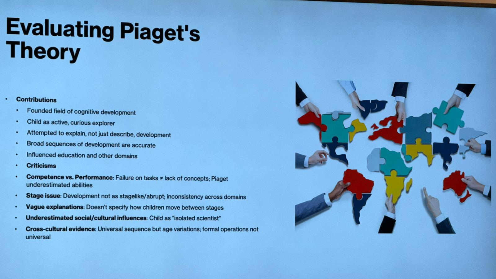
- Contributions
- Founded field of cognitive development
- Child as active, curious explorer
- Attempted to explain, not just describe, development
- Broad sequences of development are accurate
- Influenced education and other domains
- Criticisms
- Competence vs. Performance: Failure on tasks ≠ lack of concepts; Piaget underestimated abilities
- Stage issue: Development not as stagelike/abrupt; inconsistency across domains
- Vague explanations: Doesn't specify how children move between stages
- Underestimated social/cultural influences: Child as "isolated scientist"
- Cross-cultural evidence: Universal sequence but age variations; formal operations not universal
SLIDE 12
Vygotsky's Sociocultural Theory
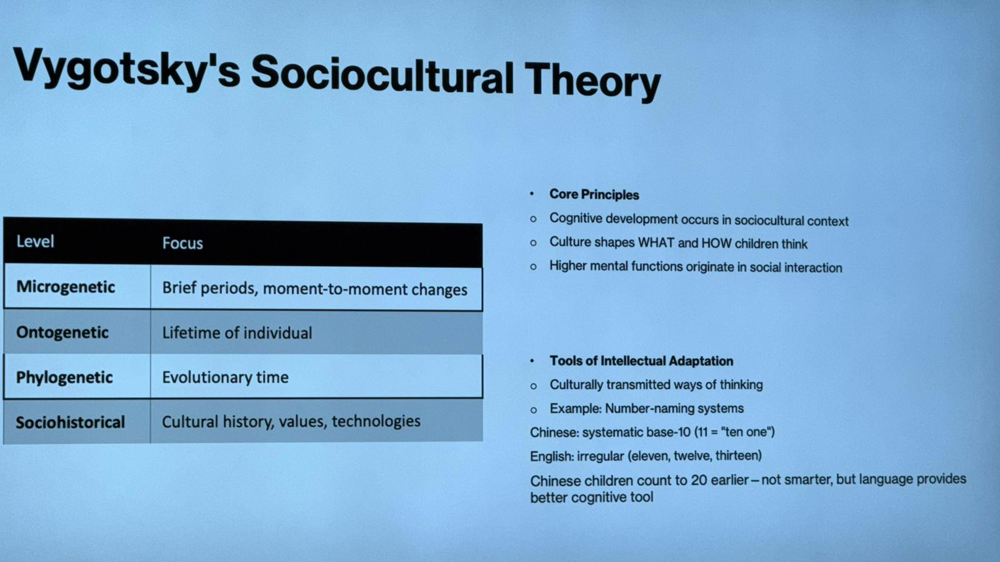
| Level | Focus |
|---|---|
| Microgenetic | Brief periods, moment-to-moment changes |
| Ontogenetic | Lifetime of individual |
| Phylogenetic | Evolutionary time |
| Sociohistorical | Cultural history, values, technologies |
- Core Principles
- Cognitive development occurs in sociocultural context
- Culture shapes WHAT and HOW children think
- Higher mental functions originate in social interaction
- Tools of Intellectual Adaptation
- Culturally transmitted ways of thinking
- Example: Number-naming systems
- Chinese: systematic base-10 (11 = "ten one")
- English: irregular (eleven, twelve, thirteen)
- Chinese children count to 20 earlier – not smarter, but language provides better cognitive tool
SLIDE 13
Zone of Proximal Development and Scaffolding
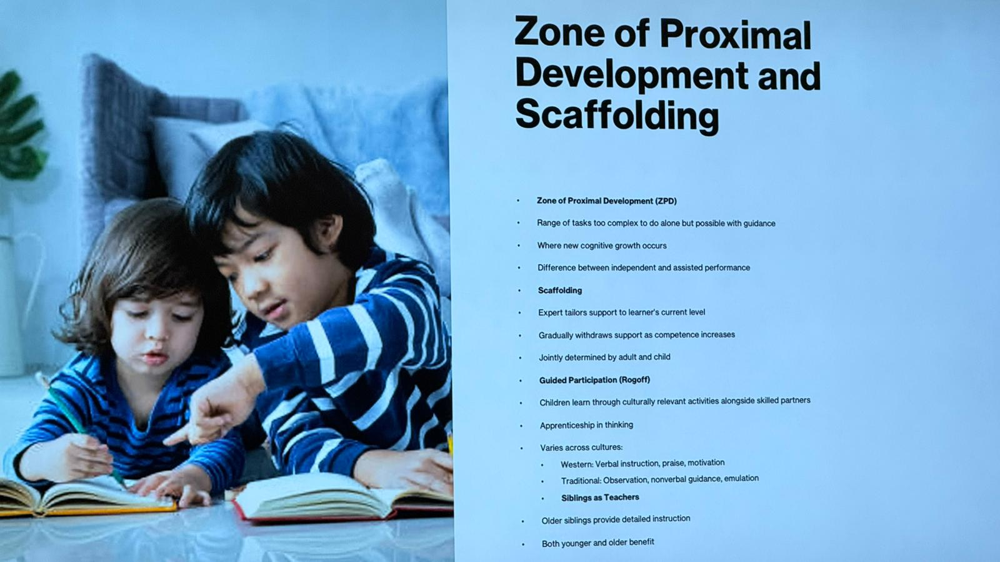
- Zone of Proximal Development (ZPD)
- Range of tasks too complex to do alone but possible with guidance
- Where new cognitive growth occurs
- Difference between independent and assisted performance
- Scaffolding
- Expert tailors support to learner's current level
- Gradually withdraws support as competence increases
- Jointly determined by adult and child
- Guided Participation (Rogoff)
- Children learn through culturally relevant activities alongside skilled partners
- Apprenticeship in thinking
- Varies across cultures:
- Western: Verbal instruction, praise, motivation
- Traditional: Observation, nonverbal guidance, emulation
- Siblings as Teachers
- Older siblings provide detailed instruction
- Both younger and older benefit
SLIDE 14
Language, Thought, and Educational Applications
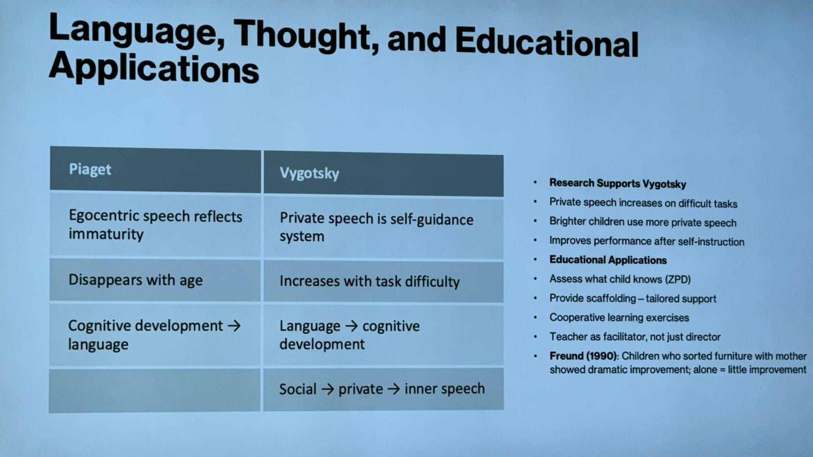
| Piaget | Vygotsky | |
|---|---|---|
| Self-talk | Egocentric speech reflects immaturity | Private speech is self-guidance system |
| With age | Disappears with age | Increases with task difficulty |
| Direction | Cognitive development → language | Language → cognitive development |
| Path | — | Social → private → inner speech |
- Research Supports Vygotsky
- Private speech increases on difficult tasks
- Brighter children use more private speech
- Improves performance after self-instruction
- Educational Applications
- Assess what child knows (ZPD)
- Provide scaffolding – tailored support
- Cooperative learning exercises
- Teacher as facilitator, not just director
- Freund (1990): Children who sorted furniture with mother showed dramatic improvement; alone = little improvement
SLIDE 15
Comparison: Piaget vs. Vygotsky

| Dimension | Piaget | Vygotsky |
|---|---|---|
| Development | Universal across cultures | Varies across cultures |
| Source of growth | Independent exploration | Social interaction |
| Direction | Individual → social | Social → individual |
| Change agents | Peers important | Adults important |
| Role of language | Expresses thought | Shapes thought |
MCQ Questions
SLIDE 16
MCQ Questions
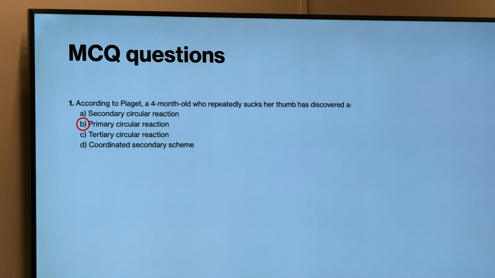
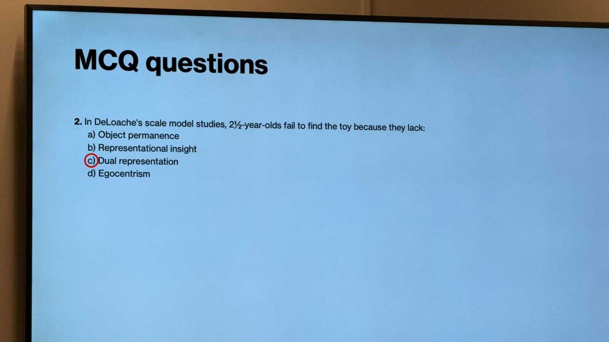
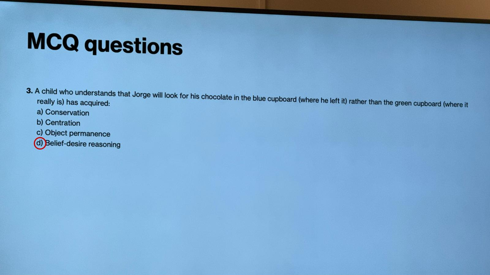
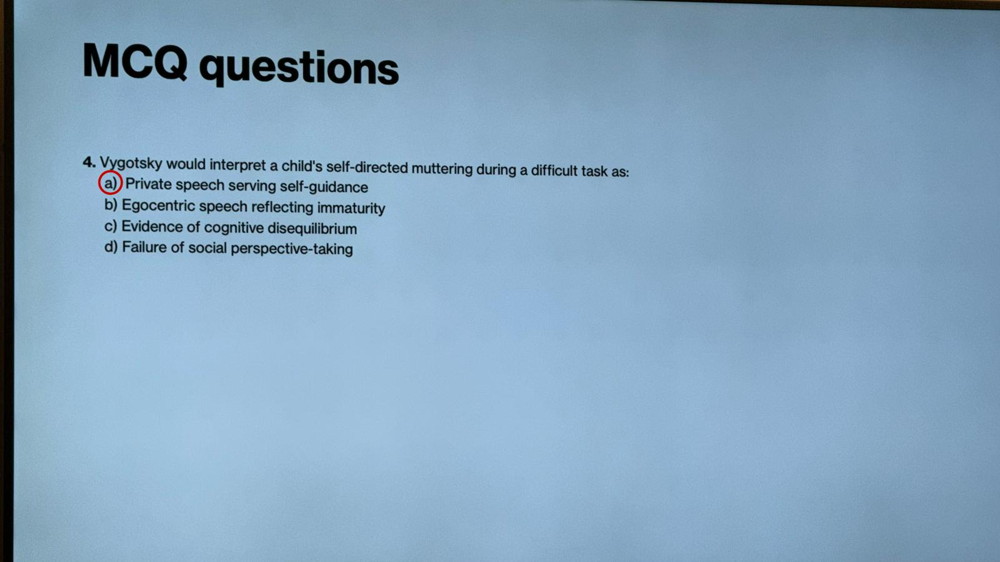
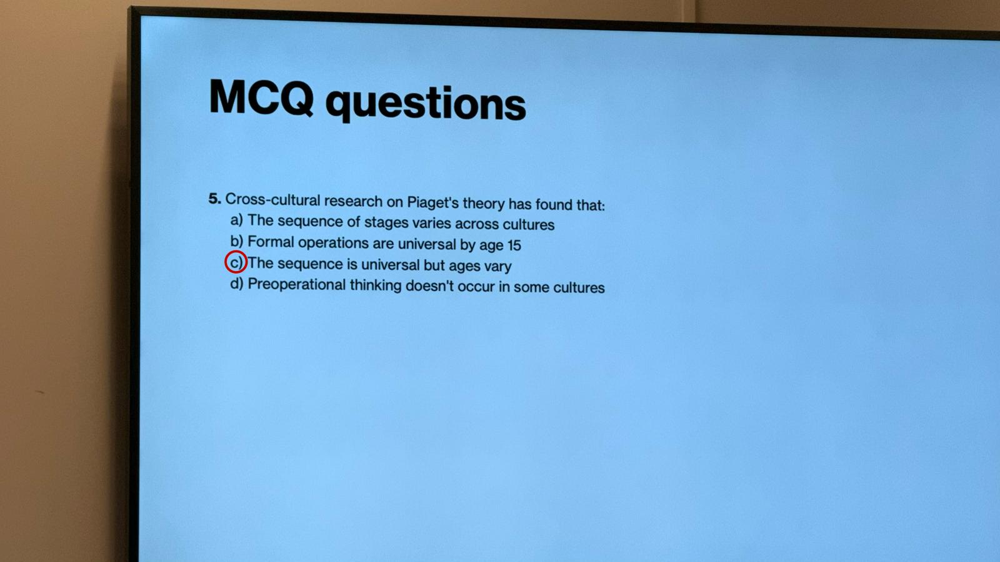
1. According to Piaget, a 4-month-old who repeatedly sucks her thumb has discovered a:
- a) Secondary circular reaction
- b) Primary circular reaction ✓
- c) Tertiary circular reaction
- d) Coordinated secondary scheme
2. In DeLoache's scale model studies, 2½-year-olds fail to find the toy because they lack:
- a) Object permanence
- b) Representational insight
- c) Dual representation ✓
- d) Egocentrism
3. A child who understands that Jorge will look for his chocolate in the blue cupboard (where he left it) rather than the green cupboard (where it really is) has acquired:
- a) Conservation
- b) Centration
- c) Object permanence
- d) Belief-desire reasoning ✓
4. Vygotsky would interpret a child's self-directed muttering during a difficult task as:
- a) Private speech serving self-guidance ✓
- b) Egocentric speech reflecting immaturity
- c) Evidence of cognitive disequilibrium
- d) Failure of social perspective-taking
5. Cross-cultural research on Piaget's theory has found that:
- a) The sequence of stages varies across cultures
- b) Formal operations are universal by age 15
- c) The sequence is universal but ages vary ✓
- d) Preoperational thinking doesn't occur in some cultures